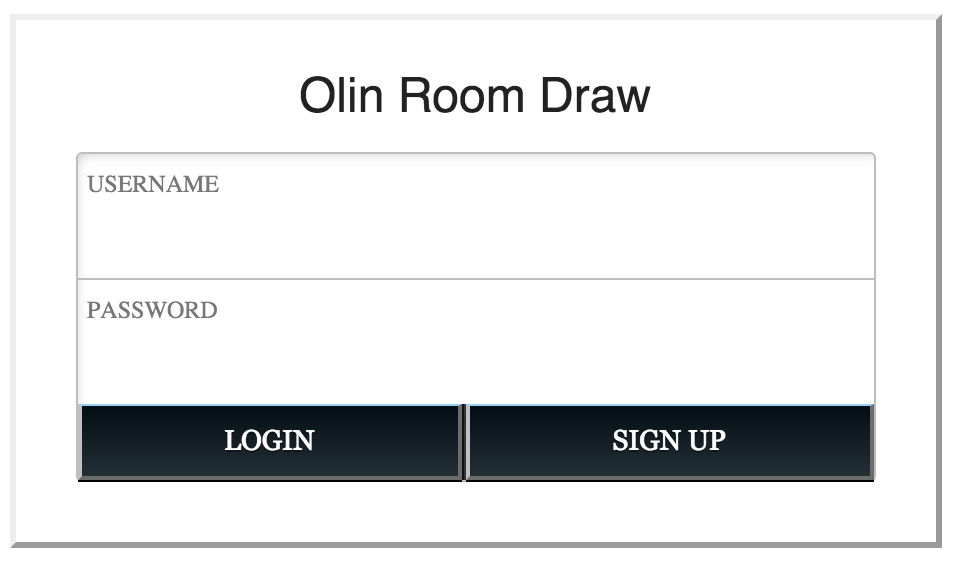

Project Brief
During Room Draw at Olin every year, students become increasingly frustrated with each other and the Room Draw Committee because of poor communication. The current interface for suites and doubles to communicate their intent to room in a certain location is completely physical - students place pins on maps of the dorms. The high activation energy to check for and address conflicts slows communication and causes important conversations to be delayed or brushed under the rug.
Hallway culture is a major part of room draw conversations but there is no easily accessible method for making those discussions known and the intent of a certain group of students clear. At present, students can only speculate as to the culture of a hallway based their knowledge of the students planning to live in those hallways.
Our project will facilitate earlier, clearer communication for rising sophomores, juniors, and seniors in Olin’s room draw in order to alleviate tensions and prevent miscommunications.
A very rough possible implementation of this project can be found in the sketch below.

In the sketch, there is an interactive map of one floor of the dorm, chats of hallways that the user is interested in living in, and a profile of each of the suites/hallways that a user can click on. The profiles of suites and hallways might contain information like how loud the suite is, and whether they are planning on partying. Additionally, a user can navigate between dorms and floors using the buttons on the bottom left corner.
As we design the tool, we will be reaching out to past members of the Room Draw Committee and students who have participated in Room Draw to better understand their pain points with the current system. In conversations with participants, we will learn how students currently approach room draw and how our project could address their concerns.
Our target users are all around us, and we can collect stories and frustrations in person and through anonymous surveys.
The Derecho team includes students who have been room draw participants and one who has been a member of the Room Draw Committee. We have access to two cars which could allow us to interview students and administrators at other schools with different Room Draw systems and policies.
Our team consists of two people who have experience in web app creation, Austin and Tenzin, and two people who would like to learn how to build web apps, Ian and Sophia. Since Ian and Sophia would both like experience with building web apps, the two of them will lead the software portion of this project. Austin and Tenzin both would like focus more on the design portion of this project and will lead that effort. That being said, everybody will be involved in each portion of the project, but two team members will lead each portion of the project.
Rolly Chairs (Austin)
Rolly chairs maker it easier for workers in offices to move about, communicate, and collaborate. Moving around in rolly chairs gives users a certain sense of child-like joy. We would similarly like to reduce friction in communication and make our users enjoy it the whole time.Pin Boards (Austin)
The pin boards are the current formal medium for communicating preferred double and suite preference. By physically placing pins students can make their intents clear and they make the spacial arrangement of rooms readily apparent. The flaws of this system serve as equally if not stronger inspiration. The boards are hosted on the second floor of the CC. This leads to both infrequent updating of the boards and a latency between them being updating and that information being disseminated.Inbox (Austin)
Inbox is google’s most recent reworking of their email interface. It's goal, like ours is the figure out who you want to talk to and when and then to organize your conversations to make keeping on top of your communications easy. They do this by automagically creating inboxes that organize your emails and then display those by priority. We would like to make a system as effortless and efficient.C to Python Transition (Austin)
C is a powerful but low level programming that requires programmers to keep track of memory and other values in ways that can be unintuitive. Python is a higher level language that sacrifices speed for easing of writing. Transitioning from writing C to writing Python, everything makes total sense immediately and programmers feel empowered by the speed at which they can fly through code that use to take much longer to write. We want moving from the old room draw process to ours to feel similarly liberating.Candidates Weekend (Ian)
What makes Candidates’ Weekend uniquely Olin? Olin CW is surrounded with silliness, collaboration, and general goodwill despite the fact that it is a day of evaluation for the candidates. Despite the seriousness and formal policies surrounding room draw, we envision that our product will help students work together to plan mutually agreeable rooming arrangements.Google Circles (Ian)
Google Plus uses “circles” to organize and label groups of friends. While very different from a social network, our product could use a similar interface to organize students into suites and doubles and make students’ rooming intentions clear. Students in circles representing suites could start discussions together to decide whether to invite other members to the suite and consider the suite’s location.Email (Ian)
Many room draw conversations currently occur over email, and we believe that the written records provided by email are useful in the room draw process; however, email communication can be slow, and it can be difficult to describe hallway culture or a particular dorm location. Email inspired us to make our product better than email.Facebook Group Conversations (Ian)
In high stakes rooming discussions, students want to talk to each other quickly without having to wait for a face to face interaction. Facebook’s personal messaging system allows for groups to communicate quickly and easily. Within seconds, a user can add the relevant people to a discussion and start sending messages. Our product ought to support some type of multi-student communication tool to facilitate rooming discussions.Stack Overflow (Sophia)
We are inspired by stackoverflow (and generally all of the stackexchange collection of websites) because of the low barrier to information that it enables. If someone has a question about code, or anything else for that matter, they can likely look up the answer on stackoverflow, or a sister site. If they cannot find the answer to the question, then they can simply ask the question, and it will be often be answered relatively quickly by people who are genuinely trying to help others who might know less than they do. Although there are occasionally people who are mean, stackoverflow very much encourages people helping each other. We would like to have the same low barrier to information in our tool. We want it to be as easy to find any information about where people are living and the possible hallway culture as it is to find any information about a bug on stackoverflow. Additionally, while we cannot prevent people from being mean to each other during the room draw process,we would like to encourage the same helpful, collaborative spirit in our tool.Room Draw Planning Spreadsheet (Sophia)
Currently, this is one of the methods of communication that Olin students use to help facilitate the planning of room draw. Although this spreadsheet is typically used mostly to plan who people are living with, some groups, especially those in suites also use to figure out who has expressed a preliminary interest in living where and what culture each suite might be thinking about having. We want to make sure that our room draw tool facilitates the same initial expression of interest in suites, especially multiple possible locations as is enabled in this spreadsheet.Seat Reservation on Airline Websites (Sophia)
When checking in for a flight, some airlines allow you to choose your seat on the airplane. The interface is not cluttered, and it is clear what seats have special qualities, like being an exit row or a seat with more leg room. In our room draw tool, we want it to be just as easy to see qualities, like loudness, of a hallway as it is to tell information about a particular seat in the airline check in process.The First Iteration of a Class (Sophia)
At Olin, everyone knows that the first iteration of a class will not be perfect, but that with enough feedback, and open channels of communication, everything will be okay. We would like our room draw tool to encourage the same attitude and open communication channels.Mint Bills (Sophia)
Mint Bills allows users to pay all their bills from a single app, as opposed to using a different app to pay every bill a user has. Currently, during the room draw process, people use many different means of communication, including, email, face-to-face, and pin boards, among others. We want our tool to reduce the different mediums of communication that people use to communicate about room draw and have them in one, consolidated place.Printer/Copier (Tenzin)
While a copier allows you to make multiple paper copies of documents that you can share with other people and allows them to have access to the same information as you do, our tool helps users share information about their preferences early on in the room draw process so that other users can make their decisions accordingly. Currently, there are instances where students were unaware of the culture of people they would be living close to until after the room draw processes. We hope to resolve misunderstandings and disputes caused by incompatibility of people within a hallway or floor by allowing our users to be aware of their peers’ preferences before the final room selection.Face-To-Face Communication (Tenzin)
Many of the decisions throughout the room draw process are made through face-to-face communications. We will facilitate people to have the privacy of face-to-face communications with our tool by allowing our users to choose to only chat with certain people and since we believe that this method of communication is an essential component of the room draw process, we hope that our tool will encourage people to have more face-to-face communications by making them aware of students who have the same preferences as them.Wikipedia (Tenzin)
Like wikipedia, majority of the content of our product will be produced by the users. The users of our product will be the ones who provide information about their interests in where they want to live and the kind of hallway culture they want. They are also the ones who will be using the information on the site to influence their final decision on the room draw process. While wikipedia is the first site people generally think of visiting to find information on any topic, we hope that our product will be a place where students will visit to find any information information on the site to influence their final decision on the room draw process. While wikipedia is the first site people generally think of visiting to find information on any topic, we hope that our product will be a place where students will visit to find any information related to room draw.iPhone (Tenzin)
iPhones are generally easier to use and the user interface is more intuitive than android phones. Though Iphones have multiple features and users also demand more features, one of Apple’s main goal is to create products that customers can learn by themselves and they managed to keep the Iphone interface largely simple, which has contributed to the product’s popularity. While our tool will include multiple features to facilitate a smoother room draw process, one of our main objective is to ensure that students will find our product easy to use.Bulletin Board (Tenzin)
This is a surface where public messages can be posted. Bulletin boards can be used to announce events, provide information or for advertisements to the public. While we want our tool to allow the users to keep certain conversations private, we need our product to be a place where any user can visit to find more information on the room draw process. Hence, we want our product to be like a bulletin board where information on which our user’s preferences in location and hallway culture is open for any student to viewNeeds Analysis
The Problem
What does it mean for something to be “Olin-esque?” If one were to ask Oliners, one would hear many different answers to this question. Some students will quote the Honor Code while others cite their experiences in class, but consistently, the Olin community values cooperation, communication, and respect for others.
Every year, our current process for assigning students to dorm rooms invites students to abandon one or more of these values. We call this process Room Draw. In such a close knit community, students care deeply about who they will be rooming with and near. Students look forward to planning suites and hallways with their friends around a certain culture or theme, and they get emotionally attached to plans and potential futures. This high stress situation makes communicating intentions absolutely critical.
As an elegant and intuitive communication tool, our project aims to encourage collaboration by facilitating early communication. Through better communication, students can better understand each other’s intentions and resolve potential conflicts in a respectful and thoughtful way.
In the room draw process, we have identified three different stages: people deciding who they want to room with within a suite or double, people deciding who they are living with, and finally the stage where everything becomes official, and student life is in charge of placing remaining stragglers. A diagram of these stages can be seen below:
Of these three stages, we are focusing on the second stage -- where students decide where they are living. In this stage, students generally know who their room/suitemates are, but have not finalized a dorm, hallway, or room. We have chosen this stage of the room draw process because in the first stage, many of the conversations can, and do, happen offline. In the second stage, however, we have the opportunity to make communication more open and have lower latency. Conversations about culture and where people are interested in living concern multiple suites and doubles, and we would like to provide a communication and planning tool to facilitate these conversations.
Which Campuses Matter?
Although students at many campuses participate in room draw, we have elected not to make a room draw tool that aims to work for many different universities. There are multiple reasons that we have made this decision. The first reason is that room draw policies vary for every institution, and Olin’s room draw policy is very unique. At Wellesley and Harvey Mudd, for example all students or groups of students that are planning on living together receive a distinct rank, or order for their room draw process. In other words, every group of students knows exactly which other students outrank them and which they outrank. In this case, there is less room for communication -- people are not likely to compromise and communicate if they know immediately which person could take a contested room because of their rank. On the other hand, at Olin, room draw ranking is puts doubles and suites into groups where no double or suite knows the ranking of all the people within that group. This is possible because of Olin’s small size; at any larger school this would be a logistical nightmare. In Olin’s case, where there is no apparent winner for a contested space, communication and compromise are encouraged and required. While a planning tool that better enables communication for room draw might not be useless at an institution where the room draw policy does not encourage communication and compromise, the tool we plan to build would certainly be more useful at an institution like Olin.
{kind=link}
Additionally, at many other schools, the room draw process is very condensed -- while Olin’s room draw process lasts for months. At other schools, there is simply not enough time for the conversations that our tool would enable to play out. At these institutions, after rankings are assigned and students are told which residence hall they are living in (often decided by student life administrators using a combination of students’ class year, previous residence hall and space left in the desired residence hall) there is one night where students can select the room they are living in. Before this night, unlike at Olin, it is not expected that a preference for a specific room is made public. In fact, at some schools, some rooms or residence halls are so much prefered that students scheme to get themselves and their friends into a specific hall or room. In cases like these communication is very much discouraged. In this case, a tool for making room draw a more communication friendly process would be entirely unhelpful, and designing a communication tool for such a case would be a waste of time.
Finally, we have heard in our conversations with students from different schools that their dorm culture is somewhat equivalent to our hallway culture. This means that, at another school, living in the “right” dorm is much more important than living the the “right” room or hallway within that dorm. At Olin, almost the opposite is true -- the dorm does matter, but it is incredibly important for students to be living in the “right” hallway with all their friends. Everything related to room draw at Olin is on a micro scale with many emotions confined to a small space. Here it is easy to blame other people as opposed to the system and this makes a room draw tool customized to Olin valuable.
Who Matters?
Because Olin’s room draw process is so unique, this product will be aimed at only Olin students who participate in the room draw process. This excludes Olin students who are R2s as well as those who have not found a suite/room mate before the suite and double selection deadlines. In our conversations around the room draw process, we have found that there are four distinct types of users.
Hallway Organizer (Example: Ruth)
These students are in charge of a group of either suites or doubles. They take on responsibility for organizing and placing groups of students.
During the room draw process, hallway organizers are stressed out. They not only have the responsibility of one room or suite during room draw, but sometimes an entire hallway that is focused on living together. This means that they not only have to keep tabs on what other hallway organizers are doing, but also other independents who might have more points than any member of the group they are organizing. Their entire plan can be derailed with one unanticipated pin placement, and hallway organizers are very worried that this will happen in the room draw process.
Hallway Member (Example: Shep)
These are students that are a part of a larger hallway organization -- a group of friends all planning on living together. These students are just planning on living where their hallway boss tells them to.
During the room draw process, hallway members are relatively relaxed -- they know that they’ll be living in a hallway with their friends, with the culture that they want, and there’s someone else in charge of organizing this. Although they do care about living with their friends, they also know that someone else is responsible for organizing this.
Disengaged
These people are not engaged in the room draw process at all. They do not care who they are living with and where they are living. They are not a part of a group that wants to live together.
During the room draw process, disengaged members go with the flow. They may never lock in a roommate or go through the normal room draw process. As long as they wind up with a room before the semester starts, they are not concerned.
Passionate Independent
These students do care very much about where they are living or the culture of their hallway, but are not a part of a group.
These students may have been kicked out of a hallway group or suite due to size constraints or care strongly about some outside factor. This factors include, but aren’t limited to, proximity to first years, sound, alcohol culture, natural lighting, proximity to friends, distance from enemies, ceiling height, and floor level.
After identifying these four distinct types of users, we have fleshed out these types to create personas. A chart of our personas can be seen below:
{kind=link}
In designing this tool, we know that we need to satisfy Nancy, the passionate independent. She cares very much about the culture of her hallway and the people who are living in her hallway, but does not have a specific group of people she plans to live with. If she were planning on living with a group, then many of the conversations about hallway culture could happen offline and simply be reported online. Nancy, however, has no access to information about hallway culture, and will have to resort to asking everyone who could possibly be living in the same area as she is, and might not get the responses she needs; she simply does not have the offline communication that someone living in a hallway group does. At the same time, though, we need to make sure we also satisfy Dylan. He needs the new room draw tool to not add any work to his plate that he does not even care about. While Shep and Ruth can have conversations about culture with their respective hallway groups, it is vital that they are able to make their intents for rooms and requirements for hallway culture known, so that they can make sure that their group does not get split. For example, Ruth might be very concerned with finding an appropriate double to fill out the party hallway she is planing, and Shep’s group is concerned about finding a quiet suite to share their hallway.
Requirements
As a result of our conversations with users, and discussion of our types of users, we have narrowed down the following requirements:
First and foremost, rising sophomores, juniors and seniors should be able to use the tool to indicate which rooms they are interested in as well as to gauge other students’ preferences for doubles or suites in East Hall or West Hall.
Additionally, in interviews with our users we found that hallway culture is one of the most important parameters people use to select where they are living. Ruth, Shep, and Nancy are all highly concerned about their hallway culture. As a result, our solution should allow people to view and submit preferences in hallway culture. Currently, there is no easily accessible method for making discussions on hallway culture known and the intent of a certain group of students clear. Indicating hallway culture will allow users to view and state their lifestyle such as when they prefer to sleep and how loud they are as well as their preferred drinking culture. They could also share their ideas on activities their hallway can do.
Similarly, we want to enable an open conversation about hallway culture. While in a group, conversations about hallway culture might happen offline and might be decided by the time room draw officially happens, Nancy and other passionate independents living together might not have as clear and cohesive an idea of the hallway culture that they want. We also need to enable and store these conversations in a centralized place, so that prospective members of a hallway can engage in chats to gauge if a particular hallway is for them.
Another requirement is that users are free to engage -- or not -- in whatever portions of the room draw tool that they want to. We do not want to alienate Dylan and the disengaged room draw participants or other people who do not feel comfortable stating information. Similarly, it is important that the entire room draw planning tool is not disrupted by a few users choosing to not engage with every feature of the tool.
Impact of a Successful Solution
We realize that the goal of this class is not to make a prototype that actually works, but if we design a successful and approachable user experience, we will make an effort to build a fully functioning prototype of our product.
In a world where Oliners use our tool to improve communication around Room Draw, students are rarely surprised to learn of conflicts over rooms. Room Draw no longer causes grudges and stress, and students approach the process confident that the outcome will be agreeable. Every Oliner is invested in making sure their peers are happy where they are rooming, and everyone looks out for eachother.
| Austin | Ian | Sophia | Tenzin | |
|---|---|---|---|---|
| Project Brief | 25 | 25 | 25 | 25 |
| Consent Narrative | 30 | 30 | 20 | 20 |
| User Visits | 25 | 25 | 25 | 25 |
| Inspirational Designs | 15 | 25 | 35 | 25 |
| Team Website | 5 | 60 | 10 | 25 |
| Needs Analysis | 10 | 30 | 30 | 30 |
| Design Directions/Story Boards | 25 | 25 | 25 | 25 |
| Interaction Flow | 25 | 25 | 25 | 25 |
| Paper Prototype Creation | 20 | 40 | 20 | 20 |
| Paper Prototype Testing | 30 | 30 | 20 | 20 |
| Design Development | 25 | 20 | 30 | 25 |
| Design Refinement Wireframes | 10 | 50 | 20 | 20 |
| Design Refinement Prototype | 40 | 20 | 20 | 20 |
| Design Refinement Presentation | 25 | 25 | 25 | 25 |
| Design Refinement Writeup | 25 | 25 | 25 | 25 |
Design Development
The Design
We designed a the interface for a web application to improve the experience around Olin’s Room Draw process. Students would be able to sign in using their network credentials and begin communicating their intentions around room draw.
Map and Browsing: Crafting a user experience to enhance the communication process around Olin’s Room Draw, we acknowledged that students, under the current process, are used to placing a physical pin into a piece of foam core with a map of each dorm printed on it. Although we considered a more abstract representations of Olin’s dorms and rooms in an effort to convey additional information and insights, we settled on placing the familiar dorm floor maps as the center of our design.

Using the menu bar at the top of the screen, users can browse through the different dorm floors and get a sense of where other roommate pairs and suites have placed their pins. If a user hovers over a room where a pin has been placed, a small pop-up a appears telling the user who placed their pin in that room.
{kind=link}
Tags: An easily accessible and familiar map proved to be approachable for our users, but in order to really improve and add value to the process, our tool also needed to communicate additional information and make preferences more transparent.
To convey additional information, our design includes user created tags for rooms and suites. Tags that other have created are displayed in grayscale on the left side of the page from the time the user first logs on. Room or suite captain can weigh in on these tags indicating their room or suite’s preference around each of the tags as well as the relative importance of each preference. For example, a suite captain may drag the slider for “partying” all the way to the right to indicate that the members of the suite strongly like partying. Conversely a double captain may drag the slider for “messiness” only one tick to the left indicating that the members of the double somewhat avoid messiness.
{kind=link}
If a user selects another room, there is a button in the lower right hand corner which allows users to compare the user’s tag preferences to those of another room or suite. To show this, colored indicators are overlaid on the tag sliders to represent the preference of the room or suite being inspected.
{kind=link}
Map Overlay: The comparison tool is useful for comparing against individual rooms, but it does not allow a user to compare against an entire floor or hallway all at once. A heat map like overlay will allow this more meta level comparison. In the default state, the overlay will show the total tag ranking difference updating in real time as the user ranks more tags. This will allow users to, at a glance, see which areas have similar preferences and culture to them and which do not. upon selecting a tag the overlay will switch to show a heat map of that tag in particular, allowing for a more detailed inspection of cultural trends.
Benefits and Drawbacks of our Design
We have recognized a variety of user needs throughout our process. These range from the basic selecting a room, to the more nuanced, making individual and group culture more transparent and facilitating discussion. Firstly, our design has all of the basic functions of the current solution, the pinboard, people are able to select rooms easily and the latency of the analog solution is minimized. With this design you can see changes in real time instead of having to trek to the campus center. Our dynamic tagging system excels at allowing users to put forward a snapshot of their individual culture and the culture they would like around them. Our heatmap and comparison functions make it easy for users to see both in fine detail and in the aggregate the culture and attitudes of the dorms. By focusing so much on the culture piece of the room draw puzzle though, this design relegates facilitating discussion to the background. We include a way to send messages to other room draw participants but nothing more. We hope that by exposing culture preferences, people will be activate to have face to face conversations to pre-empt conflicts but we leave the impetus for these discussions on the users.
Why we're confident in this idea (The other things we tried)
Before narrowing down on the idea that we described above, we investigated three possible design directions. We created these design directions by identifying themes around what our users view as important.
Providing information about the big picture of who is living where
This design direction focuses on giving people as much information about who is living where as possible. One possible design interaction can be seen below.
{kind=link}
In this design direction, we aimed to capture the idea that being able to visualize room draw on the dorm-level as opposed to a floor or hallway level would provide added value. Here, we want users to be able to not only be able to see how multiple floors are shaping up, but also be able to see easily who is living above or below them. Afterall, loud upstairs neighbors might be more annoying than loud neighbors across the hall. One possible interface we briefly investigated for this design direction is the “bubble map” visualization.
{kind=link}
Although this is not a complete map of a dorm, this interface would allow a user interested in living in the West hallway on the 2nd floor to easily see who is planning on living in their chosen hallway, as well as the other hallways on their floor and the hallways above or below their second hallway.
There are a few main reasons that we did not move further than initial sketches of possible interfaces with this design direction. Although presenting information in a different way is an intriguing idea, there is little added value. In the current room draw process, people can access this information already. We are just reshuffling the information that already exists to display it in a different way. Although a tool that makes seeing the big picture of who is living where might be useful for someone like Ruth the Hallway Organizer (see personas from last phase) Nancy the Passionate Independent might not like this tool as much. Although she likes the idea of being able to see who is around her, she also cares a lot about the culture of the hallway she lives in, and this tool puts culture in the back seat in preference of visualizing data. Additionally, big picture information is not useful to people like Shep or Dylan who are not very engaged in this part of the room draw process, and having to navigate through the big picture information to select a room would frustrate them.
Facilitating communication about who wants to live where
Another of our design directions is facilitating communication around who wants to live where. A tool in this design direction would focus on making it easy to have conversations between people interested in living in/on the same floor, hallway, or room. Since our goal was to improve communication around the room draw process, this is perhaps the most obvious design direction, and the process for this particular direction is relatively simple.
{kind=link}
As can be seen in the brief process diagram above, the process in a case centered around communication might involve navigating through a map of the different floors of a particular dorm, selecting a room that the user is interested in living in. If others are also interested in living in the same room, then users engage in a conversation about who gets the room, which will eventually end with one person getting the room and others having to find new rooms. Once a person has selected a room, they would be automatically added to public chats with all the current members of the hallway that other prospective members of the hallway could see. One possible implementation of this can be seen below:
{kind=link}
We did not choose to pursue this design direction because we felt that it was too straightforward. There was an easily implementable solution, but we felt that this direction was not particularly innovative -- simply a digital representation of the current pin board process Olin has. For the purposes of this class, we felt that we could learn much more pursing our third design direction. Additionally, a system built around communication does not work for people like our Shep and Dylan personas who are not interested in communicating at all. This type of design would be frustrating for people trying to communicate with the Sheps and Dylans of room draw, and doesn’t necessarily add any value for a Nancy or Ruth who is trying to determine if she or someone else will be a good cultural fit or see how other hallway groups are behaving.
Making sure people are aware of the culture of their living area
Our third design direction, and the one we chose to pursue, is culture focused. As described above, in this design direction we are trying to add value by making information about culture that is not easily accessible in the current room draw process easily available to users. Although we landed on the idea of culture “tags” relatively early in the design process the the design interaction changed quite a bit from the early iterations.
At first, we wanted users to sort tags around whether they felt positively or negatively around a certain tag. The paper prototype of an interface for doing this can be seen below:
{kind=link}
In this case, users would have to say that they feel positively about certain tags and negatively about others. In user testing, there was quite a bit of confusion about what what it meant to tag something as negative or positive. For example, does it mean the same thing to feel negatively about parties and to feel negatively about tea? For the purposes of room draw, is one more important? In the end, we decided on the more dimensional approach to ranking tags that lets users rank tags all the way from they can’t live near someone who supports this tag to they need to live near people who support this tag. This will clear up the confusion caused by having people sort tags into just two categories.
Another interaction that we spend a lot of time considering is how to visualize what tags a double or suite has in common and one that they disagree on. Our initial way to visualize this was to just show users how others had organized their tags into two grouped and provide some sort of heatmap that reflected net agreement. Pictures of these can be seen below:
{kind=link}
{kind=link}
In this implementation, although users can infer conflicts by knowing how they sorted the tags, and can get a net agreement score, there is no way for users to easily see which tags they agree on. Since being a cultural match is so important for people at Olin, we need to make it easy to see which culture tags are conflicting and which match in a particular situation, especially for tags that especially important to our users. As a result, a design that requires users to infer conflicts and agreements will not meet our users needs.
Insights Gained
We learned early on from our user visits as well as from our own experiences that the current room draw process requires better communication. By making information about room draw available early on to students, we feel that we could mitigate frustration during the room draw process by encouraging early conversations and discussions. In addition to location, we found that students’ interest in where they are living can be primarily influenced by hallway culture and other students living around them. While we decided that it is essential for the tool to display hallway culture as well as who is interested in living where, we realized by trying out different interface designs that the interface design that we decide on could look very different depending on which feature we decide to prioritize. This lead to our discussion on whether we think that the tool would be more useful if the information is presented in a way that allows people to view hallway culture easily or view people who are interested in living nearby. Hence, this exercise allowed us to delve deeper into what exactly do we think is most important and useful for our users to communicate about during room draw.
A feature that was most commonly requested by the students who had tried our paper prototype was the ability to view who had placed their pin in a room when they hover their cursor over it. They wanted a small pop up right next to the room with names of the people who are interested in living in that room. Our initial idea of viewing people interested in a room was clicking on that room, which also allows you to view the button to select that room as well as view the tags of those people. The request made by the students who tried our paper prototype made us realize that while we have been focused our making our tool primarily for indicating culture with the feature to select rooms, students should also have the capability to check who is interested in living around them and this task requires easy access to information. The users complained that clicking each room for browsing will be tedious. While we initially thought that pop ups would be bothersome when users happen to move their cursor over the map, we realized that browsing will be much easier with this feature.
Wire Frames/Site Map
Sitemap
Pictured below is the sitemap of our prototype.
{kind=link}
In this sitemap, we aim to show all of the paths a user can take. There are two main paths -- exploring the dorms and indicating one's own culture preferences, which will each be described in further detail. The following documation will walk through each interaction a user can have with our prototype, starting with the login screen.
{kind=link}
Login Page: When users first open our webapp, they will come to a login screen. On this screen, they will see a message that tells them to log in with their Olin network credentials, for example sseitz and sophiaspassword. After inputting this information and pressing the login button, users will be taken to the landing screen.
{kind=link}
Landing Screen: The landing screen is a view that contains a map of one floor of a dorm. The floor that is displayed is chosen with the following logic: if a user has placed a pin in a room, that floor of the dorm is displayed. Otherwise, if the user is a rising senior or junior, then the first floor of East Hall is displayed. Otherwise, if the user is a rising sophomore, the first floor of West Hall is displayed. Additionally, there is a banner on the top of the screen that allows users to switch between floors and dorms or logout of the webapp. When a user clicks on one of the floors, the map will transition to that floor, and this particular floor will be highlighted on the banner. At the start, whichever floor the user is on will be highlighted.
Along with them map of one floor of a dorm, there is also a “card” that displays user culture information, settings, and notifications. The tab currently selected is the user culture information tab. This tab contains the users and roommates name, currently selected room, and tags that they have interacted with. If users have not interacted with any tags, then the tags section will be blank, and they will only be able to see a search bar that has the words “search or add tag”. If they have interacted with tags, then this search bar will appear as well as the tags that they have ranked. In this case, the tags will be arranged from “need” to “can’t stand”, and a user will scroll the card.
From this view, the user has a few possible actions, they can search or add tags, explore the dorms, view notifications, or view/change settings.

Add/Search Tags: Here, a user can search for tags. A user can search for a tag in the search box. If they find the tag, they can click the “+” button next to the tag to add it to their list of tags that they’ve ranked. If there are no tags that match the user’s description, they have the option of adding a tag that others can interact with.
When a user clicks on the search box, before they type anything, the search box will suggest that tags that that a user has not interacted with. These will be the five most popular tags that a user has not interacted with.
Once a user selects a tag, it will appear at the top of their tags list until they rank it. Users can rank tags by dragging the indicator from need to have to need to avoid. This interaction is shown below.
{kind=link}
A user can also adjust their ranking on other that they have already ranked. Any time a user changes their ranking on an existing tag or ranks a new tag, the heat map will update to reflect the current net agreement/disagreement score.
Settings: From the landing page, a user can also change their settings. To do this a user can click on the settings tab on the card beside the map of the dorms. From this tab, users can choose which events they would like to get email notifications for (for example, when someone else has placed their pin in a room that is currently selected by the current user or when there is a new member in the user’s hallway). In this page, a user can also input the methods by which they would prefer to be contacted, like slac, email, text for example, and rank their prefered methods of communications.

Notifications: A user can also click on the notifications tab at the top of the card to view their current notifications. This screen will look something like the facebook notification dropdown, and will just take up room in the card.
{kind=link}
Switching Floors: Users can browse through different dorm floors using the menu bar at the top of the screen. Clicking on a particular floor on the bar will display the map of that floor and the floor name will be bolded.
{kind=link}
Hover: When a user hovers over a room where a pin has been placed, a small pop-up appears telling the user who placed their pin in that room.
{kind=link}
Click: After hovering over a room, a user can click to select the room to view more information.
{kind=link}
Compare: The comparison tool is designed for comparing culture against individual rooms. When a user clicks on a room, there is a button in the lower left hand corner which allows users to compare the user’s tag preferences to those of another room or suite. To show this, colored indicators are overlaid on the tag sliders to represent the preference of the room or suite being inspected.
{kind=link}
Selecting Room: When a user clicks on a room, there is a button in the lower right hand corner which allows users to select that room. By doing so, the user’s name will appear along with the students who have also selected that room. Those students will receive a notification that someone else is also interested in that room.
{kind=link}
{kind=link}
Contact Information: When a user clicks on a room, there is a “conversation button” which allows the user to connect to the students who have place their pins on that room. If the preferred method of connecting to them has not been indicated in the settings, the user will be directed to email them to their olin email accounts.
{kind=link}
Group Heuristic Evaluation
Bonnie Ishiguro, Marena Richardson, Chris Wallace, Susie Grimshaw
Overall we found the prototype design intuitive, and the idea of tags and ranking is compelling. There is a clear natural mapping between the map displayed on the website and the actual floor plans. Color is successfully used to convey information about the level of tag agreement with another room. Between the color coding and the room map, there is very little text necessary and most information is conveyed through visuals. Hovering over a room prompts feedback that clearly indicates you are getting information about the room you are currently hovering on.
There were parts of the prototype that confused us, and that represent possible areas of improvement. We encountered two issues with the buttons on the bottom right of the screen. We were initially unsure about their functions, since we did not associate the quote icon with contact info, and the ?= icon was also unfamiliar. These buttons also do not react in a significant way when you hover over them briefly, and there is no feedback when you click on them, which further obscures their use. We found a few color-related violations. The colors of the bottom right buttons match the high/low tag agreement colors, which falsely implies that they are correlated. Additionally, the orange color of a pinned room looks like an incompatible tag match, which could be misleading. The system around interacting with tags is not completely transparent. It is not initially clear, for example, that you can add a new tag using the ‘Search for Tags’ field. It is also unclear as to how people will know to rank themselves on any new tags that you create.
-
[H1 Visibility of system status] (Severity 3) {Found by 3}
It is not initially clear that you can add custom tags, so I recommend indicating that explicitly on the dashboard. “Search for tags” maybe isn’t the right text for this field if it is meant to be a place where tags are added.
-
[H5 Error Prevention] (Severity 2) {Found by 2}
If everyone can add tags, how to other people know to rank themselves on new tags? Also, this system may lead to multiple similar tags that are all trying to answer the same questions.
-
[H4 Consistency and standards] (Severity 2) {Found by 3}
The word “notifications” does not make me think of direct messages. I originally assumed notifications would inform you an action, such as another roommate pair placing a pin on your room. Are these messages only visible to their direct recipients, or is there a group chat of sorts? Have you planned the flow for sending and receiving messages? (I realize that it is out of scope to simulate sending and receiving messages in this prototype, which would make the interaction with this section more clear.)
-
[H2 Match between system and the real world] (Severity 2) {Found by 2}
Recommend using meaningful icons instead of words to label the “pin,” “notifications,” and “settings” tabs to more quickly convey their purpose to the user. Without thinking too hard about the words, I originally thought that “notification settings” was one tab, and I only ended up clicking on “settings” separately by accident. As stated above, the meaning of “notifications” was not initially clear to me.
-
[H2 Match between system and the real world] (Severity 2) {Found by 4}
The icons for “Compare tags” and “Show contact info” on the bottom right of the screen do not communicate their functions to me. I needed to hover over the buttons to understand what they do. The “pin” button, however, is clear because I can connect it with the physical pins we use on the foam core boards.
-
[H1 Visibility of system status] (Severity 1) {Found by 1}
The floorplan image disappears when my browser window is about half size, which may be a little inconvenient for the user, or confusing if he or she does not realize that there is a floorplan available.
-
[H10 Help and Documentation] (Severity 3) {Found by 1}
Overwhelmed initially. There are a lot of things on the screen and I’m not sure what to do first.
-
[H3 User Control and Freedom] (Severity 2) {Found by 2}
Can I unpin myself?
-
[H2 Match between system and real world] (Severity 2) {Found by 4}
I was initially confused by the ? button on the bottom right. I realized after reading your documentation more carefully that it’s the compare tags button- I would have expected it to be a “help” button.
-
[H1 Visibility of system status] (Severity 1) {Found by 1}
If no one is assigned to a room, the “ button doesn’t do anything
-
[H8 Aesthetic and minimalist design] (Severity 2) {Found by 1}
The buttons and fonts on the login / sign up screen clash with the rest of the website’s flat and sans serif design. Additionally, some of the text underneath the pin, notifications, settings is Times New Roman. This choice is fine if intentional, but it looks haphazard.
-
[H9 Help users recognize, diagnose, and recover from errors] (Severity 3) {Found by 2}
Can I remove tags from my list?
-
[H1 Visibility of system status] (Severity 3) {Found by 1}
It is initially unclear to me whether the tags on the left represent my own ratings or just what I am using to compare to other’s ratings. How do I rate myself on these scales so that others can see how I compare to them? Can my scales be visually separated from the scales that I can mess with to see how different tag ratings correspond to others’ rooms?
-
[H4 Consistency and standards] (Severity 2) {Found by 1}
Empty rooms and rooms with middle tag agreement should not be the same color. You should choose a new color for middle tag agreement.
-
[H3 User control and Freedom] (Severity 0) {Found by 1}
Room says “EH” before I select one
-
[H8 Aesthetic and minimalist design] (Severity 1) {Found by 1}
Why are partying and movies defaults?
-
[H4 Consistency and Standards] (Severity 1) {Found by 1}
I definitely thought in my head that orange was good and blue was bad. Like I saw the color key and everything but I still thought the opposite. But that might just be me.
-
[H4 Consistency and Standards] (Severity 2) {Found by 3}
Buttons on the bottom right look kind of like buttons, but I would expect some hover behavior to increase discoverability.
-
[H7 Flexibility and efficiency of use] (Severity 2) {Found by 3}
Clicking pin and then a different room- the “are you sure” screen still exists. I can’t get rid of “are you sure” unless I pin to a room
-
[H2 Match between system and real world] (Severity 1) {Found by 1}
Missed initially that clicking tags added them below, was watching the map for something to change and nothing did. Match between system/real world might not be the correct heuristic for this.
-
[H4 Consistency and Standards] (Severity 2) {Found by 4}
The orange color of the room your pin is on is very similar to the orange of low tag agreement. But I like the consistency between the pin button and the color of the room.
-
[H4 Consistency and Standards] (Severity 1) {Found by 3}
Why are the first two buttons blue and the last one orange? It almost seems to imply that the first two buttons are somehow correlated with the “high tag agreement” blue and the last button is associated with the “low tag agreement” orange.
-
[H1 Visibility of System Status] (Severity 1) {Found by 1}
I can put my pin in a location, and then “put it there again”
-
[H5 Error Prevention] (Severity 2) {Found by 1}
When I select the pin, it prompts me if I am sure, however there are no additional dialogs to come up, my intuition is to press the button again to cancel it. This actually adds me pin instead of cancelling it
-
[H6 Recognition rather than recall] (Severity 1) {Found by 1}
I believe when I hover over the room, the letter indicates what group the person is in. It would be nice if this could be displayed without hovering over so I can clearly see who I am able to bump off without having to hover over the room. If I am trying to find a room that is already occupied it is very important I know who I can bump off. Maybe just a pattern indicating I can bump or can’t bump.
-
[H5 Error Prevention] (Severity 2) {Found by 1}
This may be a result of the fact that multiple tags on one room is not supported, but it seems weird that for now trying to pin on a room that is already occupied removes my previously pinned room and does not add a new one.
-
[H8 Aesthetic and minimalist design] (Severity 2) {Found by 1}
Why there are asterisks near the room numbers
Conclusion and Recommendations
We wanted to bring up some things we were unsure about with your design in case you had not fully considered them. There does not seem to be a way to tell which tags a roommate pair has ranked themselves on. Have you considered making this more transparent? What if you want to know how often a hallway plans to throw parties, but they have only ranked themselves on loudness level? Also with the loudness tag, pairs who want low volume and medium volume are more compatible than those who want medium volume and high volume. Shouldn’t that be reversed? Is there ever a situation where you would be upset with having quieter neighbors?
We have a few suggestions that we feel will make your design better. Since it is very easy to place your pin elsewhere, is the prompt asking you if you are sure necessary? Perhaps instead you could add feedback afterwards that clearly confirms that you’ve pinned yourself in a room, to avoid mistaken pinning. You are also using the same color (white) to indicate neutral agreement and an unoccupied room. This is confusing and changing the agreement scale to be colors that are not used anywhere else would solve that problem.
Appendix: Individual Heuristic Evaluations
Bonnie Ishiguro
-
[H1 Visibility of system status] (Severity 2)
It is not initially clear that you can add custom tags, so I recommend indicating that explicitly on the dashboard.
-
[H5 Error prevention] (Severity 2)
If everyone can add tags, how to other people know to rank themselves on new tags? Also, this system may lead to multiple similar tags that are all trying to answer the same questions.
-
[H4 Consistency and standards] (Severity 2)
The word “notifications” does not make me think of direct messages. I originally assumed notifications would inform you an action, such as another roommate pair placing a pin on your room. Are these messages only visible to their direct recipients, or is there a group chat of sorts? Have you planned the flow for sending and receiving messages? (I realize that it is out of scope to simulate sending and receiving messages in this prototype, which would make the interaction with this section more clear.)
-
[H2 Match between system and the real world] (Severity 2)
Recommend using meaningful icons instead of words to label the “pin,” “notifications,” and “settings” tabs to more quickly convey their purpose to the user. Without thinking too hard about the words, I originally thought that “notification settings” was one tab, and I only ended up clicking on “settings” separately by accident. As stated above, the meaning of “notifications” was not initially clear to me.
-
[H2 Match between system and the real world] (Severity 2)
The icons for “Compare tags” and “Show contact info” on the bottom right of the screen do not communicate their functions to me. I needed to hover over the buttons to understand what they do. The “pin” button, however, is clear because I can connect it with the physical pins we use on the foam core boards.
-
[H1 Visibility of system status] (Severity 1)
The floorplan image disappears when my browser window is about half size, which may be a little inconvenient for the user, or confusing if he or she does not realize that there is a floorplan available.
Susie Grimshaw
-
[H10 Help and Documentation] (Severity 3)
Overwhelmed initially. There are a lot of things on the screen and I’m not sure what to do first.
-
[H3 User Control and Freedom] (Severity 2)
Can I unpin myself?
-
[H2 Match between system and real world] (Severity 2)
I was initially confused by the ? button on the bottom right. I realized after reading your documentation more carefully that it’s the compare tags button- I would have expected it to be a “help” button.
-
[H1 Visibility of system status] (Severity 1)
If no one is assigned to a room, the “ button doesn’t do anything
-
[H2 Match between system and real world] (Severity 2)
I also didn’t expect the “ button to be contact info.
-
[H9 Help users recognize, diagnose, and recover from errors] (Severity 3)
Can I remove tags from my list?
-
[H6 Recognition rather than recall] (Severity 2)
Where do the notifications come from? Can I send one?
-
[H2 Match between system and real world] (Severity 4)
“Search for tags” maybe isn’t the right text for where I can also add tags
-
[H3 User control and Freedom] (Severity 0)
Room says “EH” before I select one
-
[H8 Aesthetic and minimalist design] (Severity 1)
Why are partying and movies defaults?
-
[H4 Consistency and Standards] (Severity 1)
I definitely thought in my head that orange was good and blue was bad. Like I saw the color key and everything but I still thought the opposite. But that might just be me.
-
[H4 Consistency and Standards] (Severity 2)
Buttons on the bottom right look kind of like buttons, but I would expect some hover behavior to increase discoverability.
-
[H7 Flexibility and efficiency of use] (Severity 2)
Clicking pin and then a different room- the “are you sure” screen still exists. I can’t get rid of “are you sure” unless I pin to a room
-
[H2 Match between system and real world] (Severity 1)
Missed initially that clicking tags added them below, was watching the map for something to change and nothing did. Match between system/real world might not be the correct heuristic for this.
-
[H4 Consistency and Standards] (Severity 2)
The orange color of the room your pin is on is very similar to the orange of low tag agreement. But I like the consistency between the pin button and the color of the room.
-
[H4 Consistency and Standards] (Severity 1)
Why are the first two buttons blue and the last one orange? It almost seems to imply that the first two buttons are somehow correlated with the “high tag agreement” blue and the last button is associated with the “low tag agreement” orange.
-
[H1 Visibility of System Status] (Severity 1)
I can put my pin in a location, and then “put it there again”
Chris Wallace
-
[H5 Error Prevention] (Severity 2)
When I select the pin, it prompts me if I am sure, however there are no additional dialogs to come up, my intuition is to press the button again to cancel it. This actually adds me pin instead of cancelling it
-
[H6 Recognition rather than recall] (Severity 1)
I believe when I hover over the room, the letter indicates what group the person is in. It would be nice if this could be displayed without hovering over so I can clearly see who I am able to bump off without having to hover over the room. If I am trying to find a room that is already occupied it is very important I know who I can bump off. Maybe just a pattern indicating I can bump or can’t bump.
-
[H8 Aesthetic and minimalist design] (Severity 2)
I do not understand what the apostrophe button means
-
[H8 Aesthetic and minimalist design] (Severity 2)
Why there are asterisks near the room numbers
Marena Richardson
-
[H8 Aesthetic and minimalist design] (Severity 1)
The buttons and fonts on the login / sign up screen clash with the rest of the website’s flat and sans serif design. Additionally, some of the text underneath the pin, notifications, settings is Times New Roman. This choice is fine if intentional, but it looks haphazard.
-
[H1 Visibility of system status] (Severity 3)
It is initially unclear to me whether the tags on the left represent my own ratings or just what I am using to compare to other’s ratings. How do I rate myself on these scales so that others can see how I compare to them? Can my scales be visually separated from the scales that I can mess with to see how different tag ratings correspond to others’ rooms?
-
[H5 Error Prevention] (Severity 3)
If I type into the search tags field, it adds a new tag. This was not the default behavior I expected. You should create an explicit way to add tags. Also once a new tag is added, how do other rooms rate themselves on that axis?
-
[H4 Consistency and standards] (Severity 2)
Empty rooms and rooms with middle tag agreement should not be the same color. You should choose a new color for middle tag agreement.
-
[H3 User control and freedom] (Severity 2)
There is no way to abandon the are you sure mode for pinning a room.
-
[H3 User control and freedom] (Severity 2)
There is no way to remove a tag from my left panel once I have added it. I would add an x next to each of them.
-
[H4 Consistency and standards] (Severity 2)
My pinned room is yellow, which too closely resembles rooms with poor agreement in orange. You should make my pinned room a more unique color.
-
[H5 Error Prevention] (Severity 2)
This may be a result of the fact that multiple tags on one room is not supported, but it seems weird that for now trying to pin on a room that is already occupied removes my previously pinned room and does not add a new one.
-
[H4 Consistency and standards] (Severity 3)
The buttons bottom right do not make sense color wise or icon wise with the exception of the pin icon, which only makes sense icon wise. You should consider grayscaling these to remove confusion with the high and low tag agreement colors. In addition, because the default mode after pinning is to show contact info, the quote button gives me the impression of hiding contact info.
-
[H2 Match between system and the real world] (Severity 2)
Most people’s exposure to direct messages falls under the category of inbox or messages, thanks to email and Facebook, notifications seems like an odd term for this category. I would have expected notifications to be things like, so and so added a tag, would you like to rank yourself on it?
-
[H1 Visibility of system status] (Severity 2)
How do I send a direct message?
Prototype Instructions
Prototype Overview
Our room draw tool aims to improve the experience around Olin’s room draw process. Students should be able to effectively communicate their intentions around room draw and understand the intentions of other students with less latency than if they were using physical pin boards.
Your Situation
You’re a student at Olin College in the midst of the room draw process. It’s mid April and just yesterday roommate pairs were announced and groups by rank. At this time last year, the foam core pin boards where roommate pairs would express their desire for a certain room would have been set up on the Dining Hall Mezzanine, but this year, StAR has opted to use a new electronic room draw communication tool.
At this point in the room draw process, roommates pairs have already been locked in. You, Sophia Seitz, know that you will rooming with Tenzin Choetso, and are currently planning on living in an East Hall double. You and Tenzin would like to live in a quiet hallway with fairly minimal partying.
Your goal is to understand the culture developing in the dorm and express your intent to live in a certain room which meets your criteria.
Login
You will first be presented with a login page. You may use the following credentials. Username: sophiaseitz Password: testing
Things we know are broken
- There are the same people living on every floor of East Hall
- We have not created a map of West Hall yet, so when you click on any of the west hall buttons, we display the East Hall data.
- You can, as a double, select to live in a suite.
- “Compare Tags” button which would have allowed you to compare tags with other roommate pairs currently does not function.
- The Home button also currently does nothing. This would take you to the current location of your pin.
- The prototype cannot handle two users contesting the same room.
Design Refinement
What is your design? How does it work?
Login Page:
When users first open our webapp, they will encounter a login screen. On this page, they can create a username and password for themselves and then log in to our app. For example, a user could use the combination sseitz and sophiaspassword. After inputting this information and pressing the login button, users will be taken to the landing screen.
Landing Screen:The landing screen is a view that contains a map of one floor of a dorm. The floor that is displayed is chosen with the following logic: if a user has placed a pin in a room, that floor of the dorm is displayed. If the user is a rising senior or junior, then the first floor of East Hall is displayed. Otherwise, if the user is a rising sophomore, the first floor of West Hall is displayed. Additionally, there is a banner on the top of the screen that allows users to switch between floors and dorms or logout of the webapp. When a user clicks on one of the floors, the map will transition to that floor, and this particular floor will be highlighted on the banner. At the start, whichever floor the user is on will be highlighted.
Along with the map of one floor of a dorm, there is also a “card” that displays user culture information, settings, and notifications. The tab currently selected is the user culture information tab. This tab contains the users and roommates name, currently selected room, and tags that they have interacted with. If users have not interacted with any tags, then the tags section will be blank, and they will only be able to see a search bar that has the words “search or add tag”. If they have interacted with tags, then this search bar will appear as well as the tags that they have ranked. In this case, the tags will be arranged from “need” to “can’t stand”, and a user will scroll the card.
From this view, the user has a few possible actions, they can search or add tags, explore the dorms, view notifications, or view/change settings.
Add/Search TagsHere, a user can search for a tag in the search box. If they find the tag, they can click on the tag to add it to their list of tags that they’ve ranked. If there are no tags that match the user’s description, they have the option of adding that tag to the master list of tags users can interact with.
When a user clicks on the search box, before they type anything, the search box will suggest that tags that that a user has not interacted with. These will be the five most popular tags that a user has not interacted with. This is shown below:
Once a user selects a tag, it should appear at the top of their tags list until they rank it. Currently, however, in our prototype, newly added tags appear at the bottom of the tags list. Users can rank tags by dragging the indicator from need to have to need to avoid.
Any time a user changes their ranking on an existing tag or ranks a new tag, the heat map will update to reflect the current net agreement/disagreement score for each visible room.
SettingsA user can also click on the settings tab on the card beside the map of the dorms. From this tab, users can choose which events they would like to get email notifications for (for example, when someone else has placed their pin in a room that is currently selected by the current user or when there is a new member in the user’s hallway). In this page, a user can also input the methods by which they would prefer to be contacted, like slac, email, text for example, and rank their prefered methods of communications. This is currently unimplemented, but below is a picture of wireframes depicting what we plan to have in the settings tab:

A user can also click on the notifications tab at the top of the card to view their current notifications. This screen will look something like the facebook notification dropdown, and will just take up room in the card.

Users can browse through different dorm floors using the menu bar at the top of the screen. Clicking on a particular floor on the bar will display the map of that floor and the floor name will be bolded.
When a user hovers over a room where a pin has been placed, a small pop-up appears telling the user who placed their pin in that room as well as their group number in the room draw.
The comparison tool is designed for comparing culture against individual rooms. When a user clicks on a room, there is a button in the lower left hand corner of the preview card which allows users to compare the user’s tag preferences to those of another room or suite. To show this, colored indicators are overlaid on the tag sliders to represent the preference of the room or suite being inspected. This is currently not functional in our prototype, but we will implement this in the near future.

When a user clicks on a room, there is a button in the lower right hand corner which allows users to select that room. To ensure that users do not accidently select a room, users have to select the symbol again. After doing so, the user’s name will appear along with the students who have also selected that room. Those students will receive a notification that someone else is also interested in that room.
When a user clicks on a room, there is a “conversation button” which allows the user to connect to the students who have place their pins on that room. If the preferred method of connecting to them has not been indicated in the settings, the user will be directed to email them to their olin email accounts. We have chosen to not to reinvent the wheel as it comes to communication by building an in-app communication tool; Olin has so many ways of communication, and adding another method would likely not be utilized. This, however, is an area that we are presently not sure about, and are investigating other options for in-app communication.
Our current prototype has largely stayed true to our paper version, except in three respects. The first being our mechanism for finding, and creating tags. In our paper prototype all tags are displayed and you scroll down the sidebar to find the appropriate tags. To add a tag there was a small section at the bottom of the list that allowed users to input a tag name and add it to their list. This system seemed rather unwieldy, requiring a lot of scrolling and increasing the activation energy for adding new tags. We redesigned this, in the new system we have a search bar at the top of the tags list. This search bar allows users to always easily find a tag using a fuzzy search algorithm, and if their tag isn’t currently in the system it prompts them to add it. This dramatically decreases the time to find a tag, and to add a tag all while decreasing the number of duplicate tags. The second major change was to add a visual marker to each room for the number of pins currently placed in it. This makes taken rooms even more visually distinct and demonstrates conflicts. Lastly, We also changed the way in which users create accounts. In the paper prototypes we had users use their OlinApp credentials to login, in the current prototype we use a local strategy OAuth. This was mostly for ease of prototyping, and may change back.
What (if any) key insights did you gain during this phase?Our biggest insight this phase was how important the use of color is in design, and how difficult it is to find a good color scheme. We had always assumed that it would be relatively easy to find a color scheme that worked for us. Afterall, color, and the use of color, is not something we typically notice when we see a beautifully designed website. This was very much not the case for us, as color has been a large point of contention during this phase. It has been especially difficult to figure out an intuitive coloring scheme for the rooms in the dorm, where we need one color scale to represent low to high tag agreement, a color for the user’s pin, and a color for rooms that are not occupied, and all of these colors should be distinguishable and instantly understandable, even by people who are color blind. This made choosing a color scheme very difficult, and neither we nor our evaluators are entirely pleased with our current solution.
Another insight that we had this phase is that icons are difficult to do well. While icons often look nicer than just having buttons with text that describe the function of the button, it is difficult to create an image that describes the function of the button as well as text would. Many of the icons that we understand the function of intuitively are only that way because we have been using those icons for so long that the meaning has become ingrained. For example, the functions of our compare tags and contact information buttons were confusing to our heuristic evaluators.
Although these buttons do have mouseover text, their function is not immediately clear, and we plan to investigate changing the icon for both of these buttons so that their function is more immediately clear.
What questions do you have now about your project?There was a general confusion about what colors to use for our tool and what they should represent. We are still exploring what color combination to use to show that a room has a high agreement or low agreement. A screenshot of our current color scheme can be seen below:
We used yellow or “gold” to show that a room has been selected. We felt this is a color that could be immediately noticed since it is considerably lighter than blue and orange that we have used for our high and low agreement respectively. However, yellow and orange looking similar could make users think that the users are in low agreement with themselves when they have chosen a room. We are also debating how to indicate empty rooms. They are currently not colored, since no one has added tags for those rooms yet. We had considered using grey to indicate empty rooms but we felt that it may also make the user think that those rooms are interactable.
We have, as a team, also struggled as to what role our app will play in generating conversations around the room draw process. Just by existing and exposing a new dimension of room draw, people will have more to talk about and be more likely to communicate with each other. But, is this this enough? Whether or not to add an in app communication tool has been a point of contention on the team. Between email, slack, trello, messenger, groupme, texting, hangouts, and calling, Oliners already have a ridiculous number of vectors for communication. It is already a struggle trying to keep on top of all of these, we worry that we will just be adding more headache. Is there a way to encourage people to have genuine and productive conversations around their rooming intentions without forcing students to take more advil? This question clearly needs more exploration by the team.
Our current prototype lacks two major features that has not been implemented yet. We now have a compare tags button in the preview card but have not implemented the ability to compare tags yet. Our current prototype also does not allow multiple people to contest for the same room. A user cannot place pin on a room where someone else has already placed their pin.